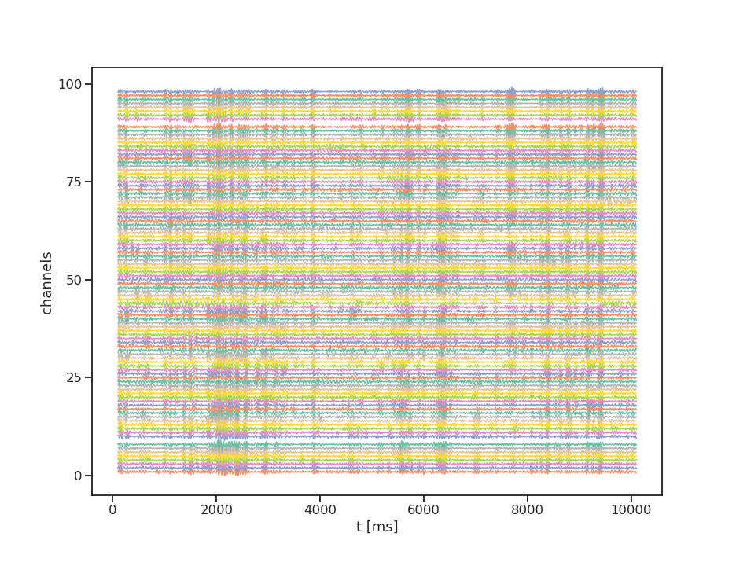
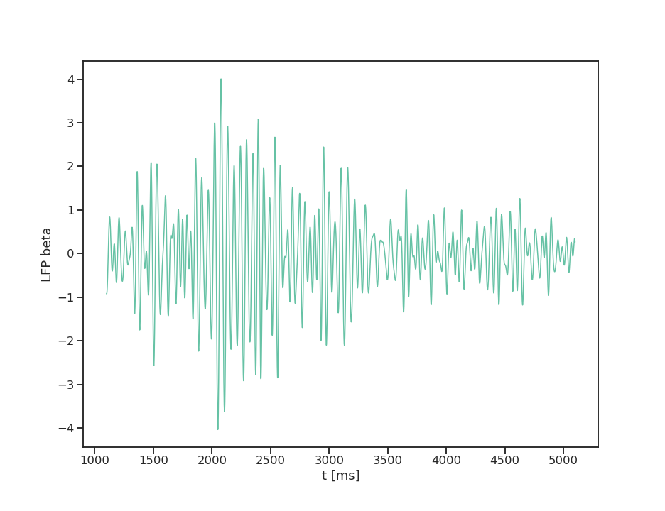
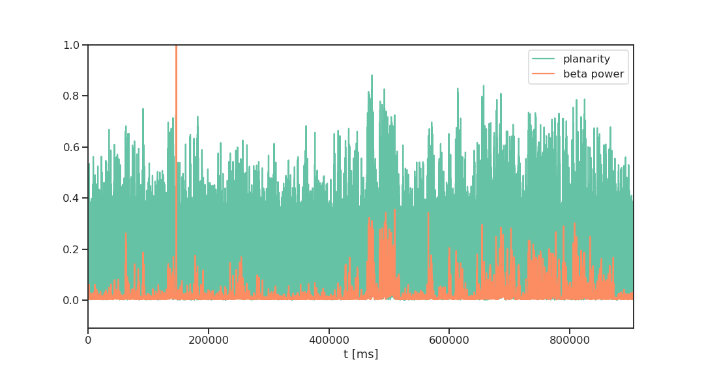
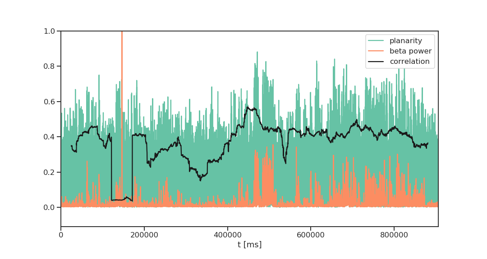
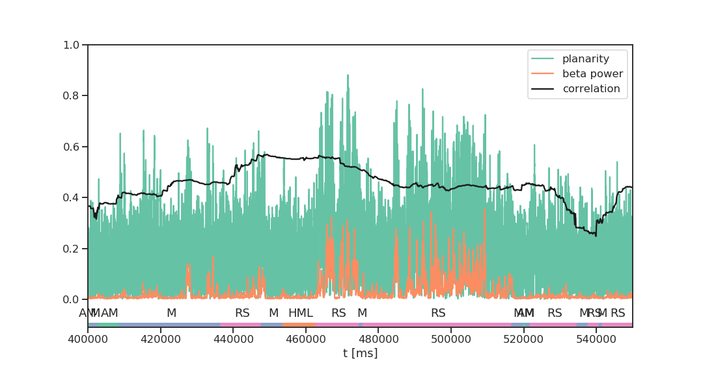
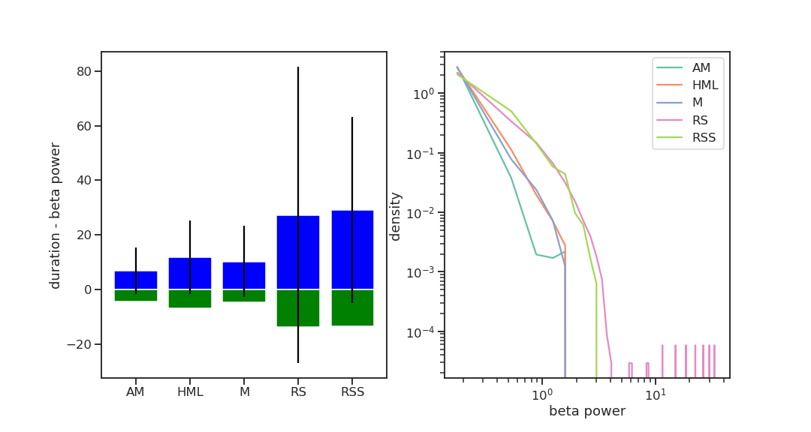
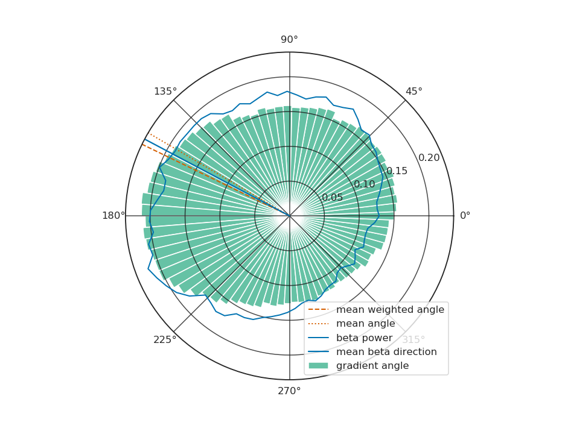

Resting State LFP Phase Waves
Robin Gutzen
2019-05-06
The LFP and Phase Waves
The Local Field Potential - LFP
The local field potential (LFP) reflects activity of many neurons in the vicinity of the recording electrode
lowpass filtered to reduce the influence of spikes (~250Hz)
Why study LFP?
LFP as summary of local network dynamics
overcoming under sampling?
LFP as driver of population dynamics
ephatic coupling?
LFP oscillations
beta band: 13-30Hz

LFP oscillations
interesting properties: phase, amplitude, spindles

What is a face wave?

What is phase wave?
spatial and temporal oscillation of LFP phase
What we know so far (excerpt)
(Rubino et al. 2006) there are planar phase waves with preferred directions (M1)
(Denker et al. 2018, Rule et al. 2018) types of waves: planar, synchronous, circular, radial, random
(Townsend et al. 2015, Denker et al. 2018) wave type, propagation velocity, beta power, and behavior correlate
(Townsend et al. 2015) there are preferred transitions between wave types
(Huang et al. 2010) different frequencies are dominant for different wave types
(Denker et al. 2011) phase locking of spikes, stronger for unitary events
(Vinck et al. 2019) gamma phase locking is tuned to orientation (V1)
What is the functional role LFP oscillations in neural network dynamics?
can we find similar wave dynamics in other datasets (tasks, areas)?
how to best characterize the wave dynamics?
investigate relationship of beta power to wave properties
investigate relationship of wave properties to behavior/state
are the findings consistent in other frequency bands?
use wave dynamics to calibrate/validate models
what is the LFP relation to spikes (phase locking, location)?
Resting state LFP phase waves
Nikos ‘doing nothing’
Visualization of wave properties
Phase wave planarity
beta power - phase wave planarity

beta event
beta power - phase wave planarity

beta power - phase wave planarity - state

beta power - state

preferred direction of phase waves

Up next
implement and compare methods for wave characterization
apply the analysis to V4A data
compare wave characteristics to spike pattern
use wave characteristic for model validation